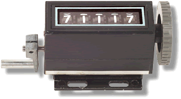
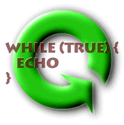

Classifying Loops
Classifying loops according to where their condition is tested is not really very useful when it comes to deciding which loop to use. It is much more useful to classify loops by the kind of bounds that they employ.
A loop's bounds are the conditions under which it will repeat its actions. In a simple, loop, the this might be expressed as "the counter has a value less than ten". In more complex loops, the bounds may be a combination of conditions. There are three major kinds of loops that can be built using the basic loop syntax available in C++.
- A definite or (counter-controlled) loop repeats
its actions a fixed number of times—a "gimme fifty pushups" kind
of loop. Ideally you can read the code and tell how many times the
loop will run.
Sometimes you won't know the exact number of repetitions until runtime; it may be based upon the number of characters in a string, for instance, or some other number which is not computed until then.
- With an indefinite loop you can never
tell how many times the loop will repeat by examining the code.
An indefinite loop is a loop that tests for the occurrence of
a particular event, not a count of the number of repetitions.
"Read characters until you encounter a period" is an indefinite loop. The bounds may be reached after reading three characters, or, after reading three-thousand. It's also possible that the period might be the first character or might not occur at all.
- Range-based loops were added to the language
in C++11. Range loops iterate over a collection of elements,
such as a string, array or vector. The informal
name for a range loop is a foreach loop. The range-based
for loop looks like this:
for (declaration : collection) statementwhere collection is an object of a type that represents a sequence (such as a string), and declaration defines the variable that is used to access the underlying elements in the sequence. On each cycle of the loop, the variable in declaration is initialized from the value of the next element in collection.


Now, let's look at different kinds of indefinite loops.
 This course content is offered under a
CC
Attribution Non-Commercial license. Content in this course
can be considered under this license unless otherwise noted.
This course content is offered under a
CC
Attribution Non-Commercial license. Content in this course
can be considered under this license unless otherwise noted.